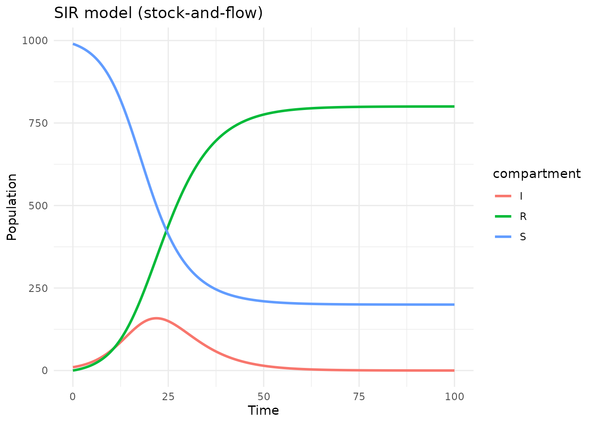
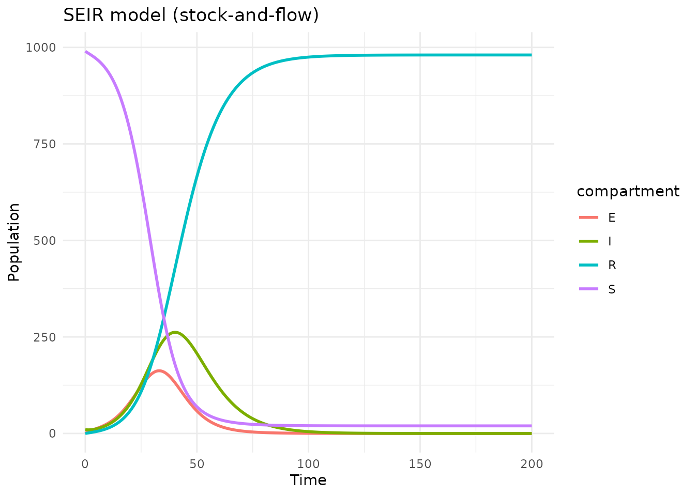
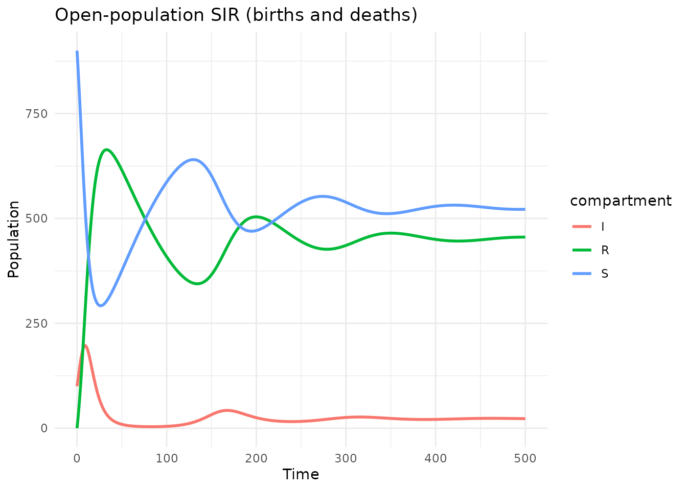
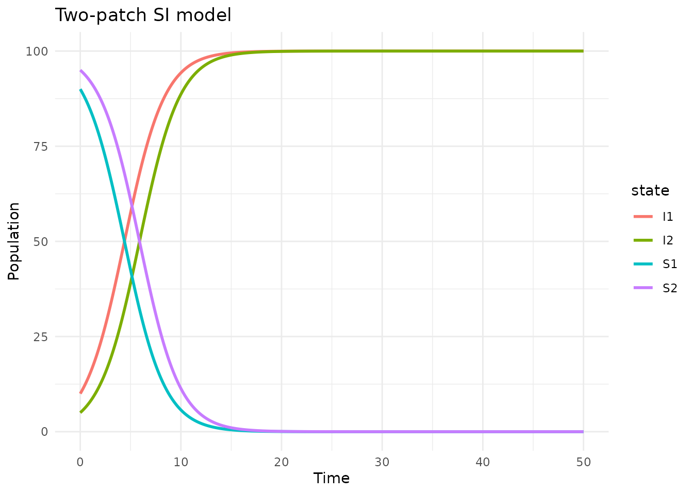

Introduction
Stock-and-flow diagrams are a widely used formalism in system dynamics, epidemiological modeling, and ecological modeling. They represent systems with:
- Stocks — state variables that accumulate over time (e.g., susceptible, infected, recovered populations)
- Flows — rates of change between stocks (e.g., infection rate, recovery rate)
- Auxiliary variables — intermediate computations used by flows
- Sum variables — aggregates of stocks (e.g., total population N)
- Parameters — external constants (e.g., transmission rate beta)
algebraicodin’s stock-flow support is inspired by StockFlow.jl and uses the same categorical framework — stock-flow diagrams are ACSets with a specific schema.
library(algebraicodin)
#>
#> Attaching package: 'algebraicodin'
#> The following objects are masked from 'package:base':
#>
#> %o%, %x%
library(acsets)
#>
#> Attaching package: 'acsets'
#> The following object is masked from 'package:graphics':
#>
#> arrows
#> The following object is masked from 'package:base':
#>
#> objects
library(catlab)
#>
#> Attaching package: 'catlab'
#> The following object is masked from 'package:algebraicodin':
#>
#> typed_product
library(ggplot2)Building an SIR model
The stock_and_flow() function provides a declarative
interface for building stock-flow models. Flow rates are specified as
quoted R expressions:
sir <- stock_and_flow(
stocks = c("S", "I", "R"),
flows = list(
inf = list(from = "S", to = "I", rate = quote(beta * S * I / N)),
rec = list(from = "I", to = "R", rate = quote(gamma * I))
),
params = c("beta", "gamma"),
sums = list(N = c("S", "I", "R"))
)Let’s inspect the model:
sf_snames(sir) # Stocks
#> [1] "S" "I" "R"
sf_fnames(sir) # Flows
#> [1] "inf" "rec"
sf_pnames(sir) # Parameters
#> [1] "beta" "gamma"
sf_svnames(sir) # Sum variables
#> [1] "N"
sf_vnames(sir) # Auxiliary variables (auto-generated from flows)
#> [1] "v_inf" "v_rec"Visualizing the diagram
plot_stock_flow(sir)Blue boxes are stocks, yellow circles are flows, green diamonds are sum variables. Solid arrows show material flow; dashed lines show information dependencies.
Transition matrices
The inflow/outflow structure can be extracted as matrices:
tm <- sf_transition_matrices(sir)
cat("Inflow matrix (flow × stock):\n")
#> Inflow matrix (flow × stock):
print(tm$inflow)
#> S I R
#> inf 0 1 0
#> rec 0 0 1
cat("\nOutflow matrix (flow × stock):\n")
#>
#> Outflow matrix (flow × stock):
print(tm$outflow)
#> S I R
#> inf 1 0 0
#> rec 0 1 0
cat("\nStoichiometry (stock × flow):\n")
#>
#> Stoichiometry (stock × flow):
print(tm$stoichiometry)
#> inf rec
#> S -1 0
#> I 1 -1
#> R 0 1Simulating the model
Using deSolve
The simulate_sf() function provides a convenient wrapper
around deSolve:
result <- simulate_sf(sir,
initial = c(S = 990, I = 10, R = 0),
times = seq(0, 100, by = 0.5),
params = list(beta = 0.4, gamma = 0.2)
)
head(result)
#> time S I R
#> 1 0.0 990.0000 10.00000 0.000000
#> 2 0.5 987.9221 11.02737 1.050568
#> 3 1.0 985.6362 12.15499 2.208815
#> 4 1.5 983.1233 13.39150 3.485195
#> 5 2.0 980.3629 14.74601 4.891048
#> 6 2.5 977.3332 16.22815 6.438651
df <- tidyr::pivot_longer(result, -time, names_to = "compartment",
values_to = "count")
ggplot(df, aes(x = time, y = count, color = compartment)) +
geom_line(linewidth = 1) +
labs(title = "SIR model (stock-and-flow)",
x = "Time", y = "Population") +
theme_minimal()
Using the vectorfield directly
For more control, extract the vectorfield function (compatible with
deSolve’s ode()):
vf <- sf_vectorfield(sir)
state <- c(S = 990, I = 10, R = 0)
parms <- list(beta = 0.4, gamma = 0.2)
du <- vf(0, state, parms)[[1]]
cat("At (S=990, I=10, R=0):\n")
#> At (S=990, I=10, R=0):
cat(" dS/dt =", du["S"], "\n")
#> dS/dt = -3.96
cat(" dI/dt =", du["I"], "\n")
#> dI/dt = 1.96
cat(" dR/dt =", du["R"], "\n")
#> dR/dt = 2Generating odin2 code
Stock-flow models can be exported to odin2 for high-performance simulation via dust2.
Deterministic (ODE)
code_ode <- sf_to_odin(sir, type = "ode",
initial = c(S = 990, I = 10, R = 0))
cat(code_ode)
#> beta <- parameter()
#> gamma <- parameter()
#>
#> S0 <- parameter(990)
#> initial(S) <- S0
#> I0 <- parameter(10)
#> initial(I) <- I0
#> R0 <- parameter(0)
#> initial(R) <- R0
#>
#> N <- S + I + R
#>
#> v_inf <- beta * S * I/N
#> v_rec <- gamma * I
#>
#> deriv(S) <- - v_inf
#> deriv(I) <- v_inf - v_rec
#> deriv(R) <- v_recStochastic (discrete-time)
code_stoch <- sf_to_odin(sir, type = "stochastic",
initial = c(S = 990, I = 10, R = 0))
cat(code_stoch)
#> beta <- parameter()
#> gamma <- parameter()
#>
#> S0 <- parameter(990)
#> initial(S) <- S0
#> I0 <- parameter(10)
#> initial(I) <- I0
#> R0 <- parameter(0)
#> initial(R) <- R0
#>
#> N <- S + I + R
#>
#> v_inf <- beta * S * I/N
#> v_rec <- gamma * I
#>
#> n_inf <- Binomial(S, min(1, v_inf / S * dt))
#> n_rec <- Binomial(I, min(1, v_rec / I * dt))
#>
#> update(S) <- S - n_inf
#> update(I) <- I + n_inf - n_rec
#> update(R) <- R + n_recDiscrete (Euler method)
code_disc <- sf_to_odin(sir, type = "discrete",
initial = c(S = 990, I = 10, R = 0))
cat(code_disc)
#> beta <- parameter()
#> gamma <- parameter()
#>
#> S0 <- parameter(990)
#> initial(S) <- S0
#> I0 <- parameter(10)
#> initial(I) <- I0
#> R0 <- parameter(0)
#> initial(R) <- R0
#>
#> N <- S + I + R
#>
#> v_inf <- beta * S * I/N
#> v_rec <- gamma * I
#>
#> update(S) <- S + (- v_inf) * dt
#> update(I) <- I + (v_inf - v_rec) * dt
#> update(R) <- R + (v_rec) * dtSEIR model with exposed class
Stock-flow diagrams naturally handle more complex models:
seir <- stock_and_flow(
stocks = c("S", "E", "I", "R"),
flows = list(
inf = list(from = "S", to = "E", rate = quote(beta * S * I / N)),
prog = list(from = "E", to = "I", rate = quote(sigma * E)),
rec = list(from = "I", to = "R", rate = quote(gamma * I))
),
params = c("beta", "sigma", "gamma"),
sums = list(N = c("S", "E", "I", "R"))
)
result_seir <- simulate_sf(seir,
initial = c(S = 990, E = 0, I = 10, R = 0),
times = seq(0, 200, by = 0.5),
params = list(beta = 0.4, sigma = 0.2, gamma = 0.1)
)
df_seir <- tidyr::pivot_longer(result_seir, -time, names_to = "compartment",
values_to = "count")
ggplot(df_seir, aes(x = time, y = count, color = compartment)) +
geom_line(linewidth = 1) +
labs(title = "SEIR model (stock-and-flow)",
x = "Time", y = "Population") +
theme_minimal()
Open-population model with births and deaths
External inflows (births) and outflows (deaths) are specified with
from = NULL or to = NULL:
sir_open <- stock_and_flow(
stocks = c("S", "I", "R"),
flows = list(
birth = list(from = NULL, to = "S", rate = quote(mu * N)),
inf = list(from = "S", to = "I", rate = quote(beta * S * I / N)),
rec = list(from = "I", to = "R", rate = quote(gamma * I)),
death_S = list(from = "S", to = NULL, rate = quote(mu * S)),
death_I = list(from = "I", to = NULL, rate = quote(mu * I)),
death_R = list(from = "R", to = NULL, rate = quote(mu * R))
),
params = c("beta", "gamma", "mu"),
sums = list(N = c("S", "I", "R"))
)
result_open <- simulate_sf(sir_open,
initial = c(S = 900, I = 100, R = 0),
times = seq(0, 500, by = 1),
params = list(beta = 0.4, gamma = 0.2, mu = 0.01)
)
df_open <- tidyr::pivot_longer(result_open, -time, names_to = "compartment",
values_to = "count")
ggplot(df_open, aes(x = time, y = count, color = compartment)) +
geom_line(linewidth = 1) +
labs(title = "Open-population SIR (births and deaths)",
x = "Time", y = "Population") +
theme_minimal()
Notice the system reaches an endemic equilibrium, unlike the closed SIR which always reaches disease-free.
Diagram visualization
plot_stock_flow(sir_open)Comparison with Petri net formulation
A stock-flow model can be converted to a Petri net (and vice versa):
# Stock-flow -> Petri net
pn <- sf_to_petri(sir)
cat("Petri net: ", acsets::nparts(pn, "S"), "species,",
acsets::nparts(pn, "T"), "transitions\n")
#> Petri net: 3 species, 2 transitions
# Check dynamics agree (mass-action, no sum variables)
sir_ma <- stock_and_flow(
stocks = c("S", "I", "R"),
flows = list(
inf = list(from = "S", to = "I", rate = quote(beta * S * I)),
rec = list(from = "I", to = "R", rate = quote(gamma * I))
),
params = c("beta", "gamma")
)
sir_pn <- labelled_petri_net(
c("S", "I", "R"),
inf = c("S", "I") %=>% c("I", "I"),
rec = "I" %=>% "R"
)
state <- c(S = 990, I = 10, R = 0)
# Stock-flow vectorfield
vf_sf <- sf_vectorfield(sir_ma)
du_sf <- vf_sf(0, state, list(beta = 0.0004, gamma = 0.2))[[1]]
# Petri net vectorfield
vf_pn <- vectorfield(sir_pn)
du_pn <- vf_pn(0, state, list(inf = 0.0004, rec = 0.2))[[1]]
cat("Stock-flow: ", du_sf, "\n")
#> Stock-flow: -3.96 1.96 2
cat("Petri net: ", du_pn, "\n")
#> Petri net: -3.96 1.96 2
cat("Max diff: ", max(abs(du_sf - du_pn)), "\n")
#> Max diff: 0When to prefer stock-flow over Petri nets
| Feature | Petri net | Stock-flow |
|---|---|---|
| Mass-action kinetics | Yes Built-in | Must specify manually |
| Frequency-dependent transmission (/N) | No | Yes Natural |
| External births/deaths | Awkward | Yes from/to = NULL
|
| Auxiliary variables | No | Yes Explicit |
| Sum variables (N) | No | Yes Automatic |
| Composition (oapply) | Yes | Yes |
| odin2 code generation | Yes | Yes |
Converting to a ResourceSharer
Stock-flow models can be converted to ResourceSharers for use with
oapply_dynam():
rs <- sf_to_resource_sharer(sir)
rs@nstates
#> [1] 3
rs@system_type
#> [1] "continuous"
rs@state_names
#> [1] "S" "I" "R"
# Evaluate dynamics
du <- rs@dynamics(
c(S = 990, I = 10, R = 0),
list(beta = 0.4, gamma = 0.2),
0
)
cat("du:", du, "\n")
#> du: -3.96 1.96 2This means you can mix stock-flow and ResourceSharer components in a single UWD composition.
Multiple sum variables
Models can have multiple independent sums:
two_patch <- stock_and_flow(
stocks = c("S1", "I1", "S2", "I2"),
flows = list(
inf1 = list(from = "S1", to = "I1",
rate = quote(beta * S1 * I1 / N1)),
inf2 = list(from = "S2", to = "I2",
rate = quote(beta * S2 * I2 / N2))
),
params = c("beta"),
sums = list(
N1 = c("S1", "I1"),
N2 = c("S2", "I2")
)
)
result_2p <- simulate_sf(two_patch,
initial = c(S1 = 90, I1 = 10, S2 = 95, I2 = 5),
times = seq(0, 50, by = 0.1),
params = list(beta = 0.5)
)
df_2p <- tidyr::pivot_longer(result_2p, -time, names_to = "state",
values_to = "count")
ggplot(df_2p, aes(x = time, y = count, color = state)) +
geom_line(linewidth = 1) +
labs(title = "Two-patch SI model",
x = "Time", y = "Population") +
theme_minimal()
Summary
Stock-and-flow models in algebraicodin provide:
-
Declarative construction —
stock_and_flow()with quoted R expressions for rates - Automatic sum variables — total population N computed on the fly
- Three simulation modes — ODE, stochastic, and discrete via odin2
- Interoperability — convert to/from Petri nets and ResourceSharers
- Visualization — DiagrammeR diagrams of the stock-flow structure
- Categorical foundation — ACSets with composition via UWDs